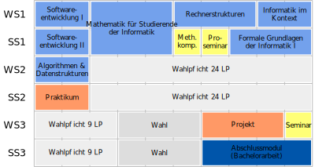

meine Ansprüche
- jeder lernt etwas sinnvolles fürs Leben, auch wenn kein Informatikstudium folgen sollte
- kein Langweilen mit formalen Kriterien, etc.
- kein Zuschütten mit Daten und Fakten, von denen man ohnehin nichts im Kopf behält
- Anzahl an Leuten, die Informatik studieren möchten oder es erwägen, ist höher nach dem Vortrag als vorher
- Vortrag macht Spaß, ist kurzweilig und interaktiv (ein bisschen)
Informatik an der Uni HH
